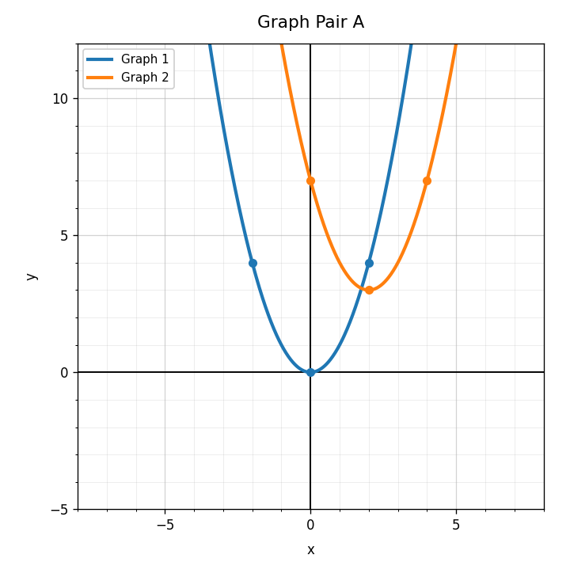

Unit 4.2: Translations
mostly DoK 1-2Unit 3.2: Solving Systems by Substitution
4 DoK 1, 2 DoK 2, 1 DoK 3, 1 DoK 4Unit 2.2: Graphing Linear Functions
mostly DoK 1-2Practice Set 1: This is a section-aligned spiral: 4.2 with 3.2 and 2.2. It is not a previous-section spiral.
Which expression represents a vertical translation of $f(x)$ upward by 3 units?
Identify whether the equation shows a horizontal or vertical shift.
$$g(x)=f(x)+5$$
Use Graph Pair A. Describe how Graph 2 appears to be translated from Graph 1. Use words, not an equation only.

Complete the table for $g(x)=(x-2)^2$.
| $x$ | 0 | 1 | 2 | 3 | 4 |
|---|---|---|---|---|---|
| $g(x)$ |
If $y=2x+1$ and $x=3$, find $y$.
Which equation is already solved for $y$?
What ordered pair is represented when $x=2$ and $y=5$?
Does $(1,4)$ satisfy $y=3x+1$?
Solve the system by substitution.
$$y=x+4$$
$$y=3x$$
Verify whether $(2,7)$ is a solution to both equations.
$$y=2x+3$$
$$x+y=9$$
Explain why substituting $x+4$ for $y$ is valid when one equation is $y=x+4$.
Create a system where substitution would be efficient. Solve it and explain why substitution was a good choice.
In $y=2x+5$, identify the slope and $y$-intercept.
Is $y=-3x+4$ increasing or decreasing? Explain briefly.
Complete the table for $y=x+2$ and use it to describe the graph.
| $x$ | 0 | 1 | 2 | 3 |
|---|---|---|---|---|
| $y$ |
A line crosses the $y$-axis at $(0,6)$ and has slope $-2$. Write a possible equation.